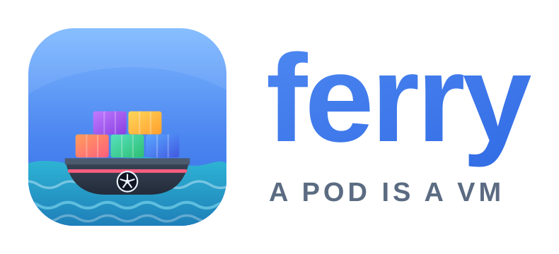
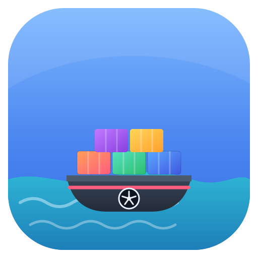
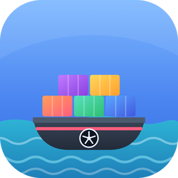

ferry — brand assets
A pod is a VM. The mark is a ferry carrying containers.
Primary lockup

App icon

256
128
64
32
16
Exported rasters

ferry-icon-256.png
ferry-icon-64.png
ferry-icon-32.png
favicon.ico
Monochrome (inherits currentColor)
#326CE5
#1b2430
#0b6b4f
Files
ferry-logo.svg/ferry-logo.png— horizontal lockup (PNG is 2x, transparent)ferry-icon.svg— full-colour app icon, source of truthferry-icon-mono.svg— single-colour mark, recolour via CSScolorferry-icon-{16..1024}.png,favicon.ico,ferry.icns— exports
The lockup's wordmark is live text (SF Pro Rounded, falling back to
Helvetica/Arial). Use ferry-logo.png where the exact wordmark matters, such as GitHub READMEs.